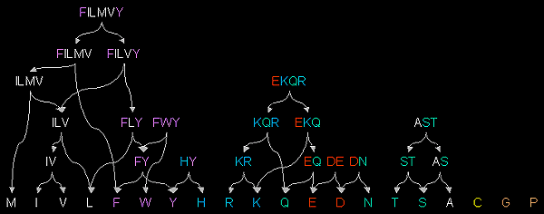

|
 Fig 3.5. eMOTIF substitution groups. These are found to occur together at a significant frequency in columns of aligned sequences, for example as observed in the Blocks databases. They have been arranged hierarchically and coloured with the standard amino acid 7-colour scheme to illustrate the relationship between conservation and amino acid properties. Note the overlap between aromatic and aliphatic groups, as well as between basic and neutral groups. Adapted from Nevill-Manning, C.G., Wu, T.D., Brutlag, D.L. Highly specific protein sequence motifs for genome analysis. 1998 Proc. Natl. Acad. Sci. USA. 95:11. pp:5865-5871 - Copyright (1998) National Academy of Sciences, USA. |